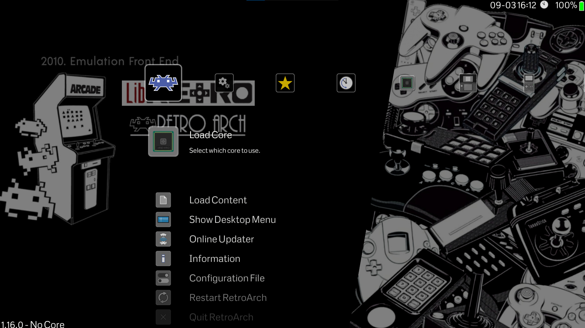

The Digital Engine.
Virtualizing the past to protect the future of play.
Binary Accuracy
Emulation translates original machine code into modern instructions. By mimicking physical silicon paths, we ensure games behave exactly like they did on original hardware.
Visual Scaling
Modern engines push beyond original hardware limits, upscaling 240p titles to **4K resolution** while utilizing CRT shaders to maintain the intended look of the era.
Preservation
Hardware eventually fails as components like capacitors leak or screens rot. Virtualization ensures that these interactive experiences remain playable for decades to come.
The Unified Interface
Front-ends like **RetroArch** have revolutionized preservation. Instead of managing dozens of individual apps, users can access their entire history through a single, seamless interface designed for handheld ergonomics.
- Save States: The ability to freeze time and resume anywhere.
- Netplay: Adding modern online multiplayer to retro classics.
- RetroAchievements: Tracking progress with community-made trophies.

Experience the Library
Ready to explore the world of open-source emulation? RetroArch is available on nearly every modern platform.
Discover RetroArchEmulation Frameworks
High-Level (HLE)
Simulates the functions of a system rather than the hardware itself. It is highly efficient and perfect for modern handheld PCs.
Low-Level (LLE)
Mimics the hardware at a granular level. While it requires significantly more power, it provides the highest level of compatibility.
FPGA Integration
Hardware-level emulation that reconfigures logic gates to act as the original console, eliminating software input lag.